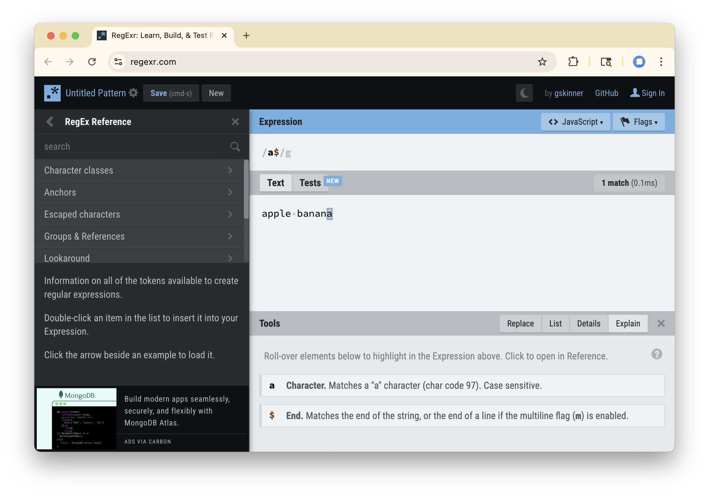

[1] "_ps.qmd" "_quiz.qmd"
[3] "data/133-survey-small.csv" "images/headache.webp"
[5] "images/headwebp.png" "images/penguins.webp"
[7] "images/regex-tester.png" "images/thieves-guild-banner.webp"
[9] "slides.qmd" "slides.rmarkdown" Strings II
Anchors, Classes, and Groups
Last Time
- A string is a sequence of characters in quotes.
- A backslash escapes a character’s usual meaning.
- A regular expression describes a text pattern.
- Metacharacters let one pattern match many strings.
Key Ideas for Today
- Shortcut classes name common sets like digits.
- Anchors pin a pattern to the start or end.
- Grouping sets the scope of a quantifier.
- Alternation matches one pattern or another.
Question: Write the pattern that matches each of the following:
- Files with a webp extension.
- Images with a name that starts with the letter p.
- Files with a three digit number.
02:00
[1] "_ps.qmd" "_quiz.qmd"
[3] "data/133-survey-small.csv" "images/headache.webp"
[5] "images/headwebp.png" "images/penguins.webp"
[7] "images/regex-tester.png" "images/thieves-guild-banner.webp"
[9] "slides.qmd" "slides.rmarkdown" - Files with a webp extension.
[1] │ _ps.qmd
[2] │ _quiz.qmd
[3] │ data/133-survey-small.csv
[4] │ images/headache<.webp>
[5] │ images/headwebp.png
[6] │ images/penguins<.webp>
[7] │ images/regex-tester.png
[8] │ images/thieves-guild-banner<.webp>
[9] │ slides.qmd
[10] │ slides.rmarkdown [1] "_ps.qmd" "_quiz.qmd"
[3] "data/133-survey-small.csv" "images/headache.webp"
[5] "images/headwebp.png" "images/penguins.webp"
[7] "images/regex-tester.png" "images/thieves-guild-banner.webp"
[9] "slides.qmd" "slides.rmarkdown" - Images with a name that starts with the letter p.
[1] "_ps.qmd" "_quiz.qmd"
[3] "data/133-survey-small.csv" "images/headache.webp"
[5] "images/headwebp.png" "images/penguins.webp"
[7] "images/regex-tester.png" "images/thieves-guild-banner.webp"
[9] "slides.qmd" "slides.rmarkdown" - Files with a three digit number.
Agenda
- Regular expressions
- Literal Characters
- Character Classes
- Shortcut Classes
- Metacharacters
- Wildcards
- Quantifiers
- Anchors
- Grouping and Alternation
- Case Studies
- Extracting a filename
- Appendix
- Splitting into majors
More Character Classes
Ranges and Negation
- Special characters in a set:
^at the start negates the set.-expresses a range.
Shortcut Class
A character class with a built-in name, such as \d for any digit.
\dmatches any digit;\Dmatches anything that isn’t a digit.\smatches any whitespace (e.g., space, tab, newline);\Smatches anything that isn’t whitespace.\wmatches any “word” character, i.e. letters, numbers, and underscores;\Wmatches any “non-word” character.
Note: These all have to be escaped when forming a string to express the pattern.
Shortcut classes
[1] │ abcd ABCD <12345> -!@#%.Shortcut classes
- Files with a three digit number.
[3] │ data/<133>-survey-small.csvAnchors
Anchor
A metacharacter that pins a regular expression to the start (^) or the end ($) of a string.
Anchor
A metacharacter that pins a regular expression to the start (^) or the end ($) of a string.
# A tibble: 2 × 3
fruit start_a end_a
<chr> <strngr_v> <strngr_v>
1 apple <a>pple apple
2 banana banana banan<a> [1] "_ps.qmd" "_quiz.qmd"
[3] "data/133-survey-small.csv" "images/headache.webp"
[5] "images/headwebp.png" "images/penguins.webp"
[7] "images/regex-tester.png" "images/thieves-guild-banner.webp"
[9] "slides.qmd" "slides.rmarkdown"
[11] "my.webp.pic.png" - Files with a webp extension.
[1] │ _ps.qmd
[2] │ _quiz.qmd
[3] │ data/133-survey-small.csv
[4] │ images/headache<.webp>
[5] │ images/hea<dwebp>.png
[6] │ images/penguins<.webp>
[7] │ images/regex-tester.png
[8] │ images/thieves-guild-banner<.webp>
[9] │ slides.qmd
[10] │ slides.rmarkdown
[11] │ my<.webp>.pic.png [1] │ _ps.qmd
[2] │ _quiz.qmd
[3] │ data/133-survey-small.csv
[4] │ images/headache<.webp>
[5] │ images/headwebp.png
[6] │ images/penguins<.webp>
[7] │ images/regex-tester.png
[8] │ images/thieves-guild-banner<.webp>
[9] │ slides.qmd
[10] │ slides.rmarkdown
[11] │ my.webp.pic.pngTip
Regex tester websites are very helpful for understanding how your regex is working https://regexr.com/

Question: Write the pattern that will match each of the following1:
- Any license plate that ends in A, B, or C.
- Valid full spellings of the word “color”.
- Strings that contain only valid phone number with area code (no country code).
01:30
- Any license plate that ends in A, B, or C.
- Valid full spellings of the word “color”.
- Strings that contain only valid phone number with area code (no country code).
Grouping and Alternation
()
Groups characters to change the scope of different operations.
()
Groups characters to change the scope of different operations.
|
Separates different possible patterns; reads like “or”.
[3] │ <Stat>istics
[4] │ <Stat>istics
[8] │ <Stat>istics
[9] │ <Stat>istics + Economics
[10] │ <Stat>istics
[11] │ <Stat>istics, Economics, Political Economy
[12] │ <stat>istics
[16] │ <Stat>istics
[18] │ <Stat>istics + Integrative Biology
[21] │ <Stat>istics
[24] │ <Stat>istics
[25] │ <stat>istics
[26] │ <Stat>istics
[31] │ <Stat>istics
[32] │ Data Science & <Stat>s
[34] │ <Stat>istics
[37] │ <Stat>istics
[38] │ <Stat>istics
[42] │ <stat>istic
[43] │ Data Science, <Stat>istics
... and 66 moreGrouping with Alternation
Question: Which strings will this match?
Grouping with Alternation
Question: Which strings will this match?
Working with Regex
Working with Regex
Guess the Metaphor
A regular expression is like a wanted poster on the thief guild’s wall: it describes a pattern (red cloak, one or more scars, last seen at the docks). Anchors say where to look, classes list the looks that count.
Case Studies
Extracting file names
How do I extract just the file name from each path?
[1] │ <_ps.qmd>
[2] │ <_quiz.qmd>
[3] │ data/<133-survey-small.csv>
[4] │ images/<headache.webp>
[5] │ images/<headwebp.png>
[6] │ images/<penguins.webp>
[7] │ images/<regex-tester.png>
[8] │ images/<thieves-guild-banner.webp>
[9] │ <slides.qmd>
[10] │ <slides.rmarkdown>
[11] │ <my.webp.pic.png>Extracting file names
How do I extract just the file name from each path?
[1] "_ps.qmd" "_quiz.qmd"
[3] "data/133-survey-small.csv" "images/headache.webp"
[5] "images/headwebp.png" "images/penguins.webp"
[7] "images/regex-tester.png" "images/thieves-guild-banner.webp"
[9] "slides.qmd" "slides.rmarkdown"
[11] "my.webp.pic.png" [1] "_ps.qmd" "_quiz.qmd"
[3] "133-survey-small.csv" "headache.webp"
[5] "headwebp.png" "penguins.webp"
[7] "regex-tester.png" "thieves-guild-banner.webp"
[9] "slides.qmd" "slides.rmarkdown"
[11] "my.webp.pic.png" How do you learn and keep track of the str_ functions in stringr?
Key Ideas for Today
- Shortcut classes name common sets like digits.
- Anchors pin a pattern to the start or end.
- Grouping sets the scope of a quantifier.
- Alternation matches one pattern or another.
For Next Time
- Sign up for Quiz 4 (10/19-10/20) on PrairieTest.
- Work on PS 4, due Saturday 10/17 at 11:59 pm.
- Keep collecting your personal data exports for Project 3.
Appendix: Splitting off majors
Splitting off majors
How do I systematically keep track of each major a student has?
# A tibble: 202 × 1
major
<chr>
1 Applied mathematics
2 Psychology & Data Science
3 Statistics
4 Statistics
5 math major + ds minor
6 Economics and minor Data Science
7 Political Science
8 Statistics
9 Statistics + Economics
10 Statistics
# ℹ 192 more rowsWhat separates two majors?
[2] │ Psychology <&> Data Science
[5] │ math major <+> ds minor
[6] │ Economics< and >minor Data Science
[9] │ Statistics <+> Economics
[11] │ Statistics<,> Economics<,> Political Economy
[18] │ Statistics <+> Integrative Biology
[27] │ Data Science< and >Applied Math
[32] │ Data Science <&> Stats
[39] │ Neuroscience<,> Molecular< and >Cell Biology<,> Minor: Data Science
[41] │ Applied Mathematics <&> Integrative Biology
[43] │ Data Science<,> Statistics
[49] │ Materials Science< and >Engineering
[50] │ Stat <+> Econ
[62] │ Data Science< and >Applied Math
[66] │ Economics< and >Statistics
[67] │ MCB <&> Stats
[69] │ Econ<,> minor data
[70] │ Statistics< and >Economics
[74] │ Cognitive Science< and >Linguistics
[80] │ Engineering Math< and >statistics
... and 26 more+is a quantifier, so it needs escaping to match a literal plus sign.- The spaces in
" and "keep it from matching inside words like “Landscape”.
One major per row
# A tibble: 254 × 1
major
<chr>
1 Applied mathematics
2 Psychology
3 Data Science
4 Statistics
5 Statistics
6 math major
7 ds minor
8 Economics
9 minor Data Science
10 Political Science
# ℹ 244 more rowsseparate_longer_delim()(fromtidyr) splits each string at the delimiter and gives each piece its own row;regex()says the delimiter is a pattern, not a literal string.str_trim()drops the spaces left at the start and end of each piece.
Counting majors
# A tibble: 84 × 2
major n
<chr> <int>
1 Statistics 62
2 Economics 28
3 Applied Math 13
4 Cognitive Science 9
5 Data Science 8
6 Econ 6
7 Environmental Science 6
8 statistics 6
9 Stats 5
10 Applied Mathematics 4
# ℹ 74 more rowsAre there really only 62 Statistics majors?
Spelling variants
# A tibble: 8 × 2
major n
<chr> <int>
1 Stat 3
2 Statistic 3
3 Statistics 62
4 Stats 5
5 statistic 3
6 statistics 6
7 stats 1
8 stats，applied math 1# A tibble: 77 × 2
major n
<chr> <int>
1 Statistics 84
2 Economics 28
3 Applied Math 13
4 Cognitive Science 9
5 Data Science 8
6 Econ 6
7 Environmental Science 6
8 Applied Mathematics 4
9 Public Health 4
10 Sociology 4
# ℹ 67 more rowsNot done yet
Splitting on a pattern is only as good as the pattern.
[6] │ Economics< and >minor Data Science
[27] │ Data Science< and >Applied Math
[39] │ Neuroscience, Molecular< and >Cell Biology, Minor: Data Science
[49] │ Materials Science< and >Engineering
[62] │ Data Science< and >Applied Math
[66] │ Economics< and >Statistics
[70] │ Statistics< and >Economics
[74] │ Cognitive Science< and >Linguistics
[80] │ Engineering Math< and >statistics
[96] │ Statistics & Environmental Economics< and >Policy
[99] │ Mathematics< and >Statistics
[100] │ Econ< and >PoliSci
[106] │ Economics< and >Statistics
[110] │ Environmental Economics< and >Policy
[111] │ Cognitive science< and >legal studies, data science minor
[116] │ statistics< and >economics
[126] │ Statistics< and >Economics
[127] │ Math< and >Data science
[134] │ Statistics< and >Business Administration
[136] │ Stats< and >Data Science
... and 4 more" and "also splits single majors: “Materials Science and Engineering”, “Molecular and Cell Biology”.- Minors ride along as their own rows: “ds minor”, “Minor: Data Science”.
- One student used a full-width comma (
，), so “stats，applied math” never split, and^[Ss]tatrelabeled it as Statistics.